Матеріали Дентсплай Сірона · журнал «ДентАрт» 2017 №4
Запорука успіху реставрації зубів, або Правило трьох візитів
KEY TO SUCCESSFUL DENTAL RESTORATION OR THE RULE OF THREE VISITS
Кожен стоматолог на прийомі часто стикається з необхідністю вирішення безлічі клінічних завдань. Як підвищити ефективність лікування? Як стати більш результативним і затребуваним? Чому навіть після відвідування стількох різних курсів і майстер-класів іноді все одно страждає якість лікування?
Спробуємо знайти відповіді... Звернімося до художньої літератури. Відомо, що художній твір ділиться на три частини: вступну, основну, де розгортається ключовий сюжет, і завершальну. З літератури перенесемося в реставрацію і введемо нове поняття: ПРАВИЛО ТРЬОХ ВІЗИТІВ.
Візит перший. Вступна частина
Підготовка до реставрації передбачає аналіз і збір інформації, починаючи з класичної загальноприйнятої консультації, до більш розгорнутої з аналізом основних і додаткових методів обстеження (радіовізіографічне, КТ, аналіз моделей в артикуляторі та інші доступні нам методи), з демонстрацією прикладів фотографій схожих клінічних робіт. Крім цього, дуже важливо провести фотореєстрацію, запротоколювати колір зубів, визначитися з вибором матеріалів, за необхідності виконати розрахунок зубного ряду з урахуванням золотих пропорцій. Під час цього візиту, якщо потрібно, можна виготовити силіконовий шаблон.
Таким чином, під час цього візиту можна виконати все те, що нас може відволікати у день реставрації. У автора є ще один нестандартний етап, який допомагає обміркувати клінічне завдання: на чорно-білому фотознімку зубів, роздрукованому на звичайному принтері, олівцем можна нарисувати ескіз майбутньої реставрації.
Візит другий. Тільки реставрація
Клінічна робота – найцікавіший, важливий і творчий етап реставрації. Ми пошарово створюємо форму згідно з підібраними колірними відтінками, смакуючи кінцевий результат. Під час цього візиту обов'язковими є побудова контактних пунктів і фінішна обробка. Багато творчих людей присвячують себе цій стадії настільки, що часто втрачають контроль над часом. Рекомендовано зробити початкову фінішну обробку, щоб упевнитися, що все виконано, як і планувалося. При можливості і достатній кількості робочого часу бажано виконати полірування. Слід запротоколювати отриманий під час цього візиту результат у стандартних ракурсах, у залежності від клінічних завдань. Надрукувавши на папері, можна не лише виконати аналіз реставрації, але й поділитися враженнями з колегами, обговорити з пацієнтом «домашнє завдання» з догляду за реставраціями і дати рекомендації з гігієни ротової порожнини, а також підготуватися до наступної зустрічі. До речі, для цієї мети підходить протокол фотографування, який використовувався на Призма-чемпіонаті, що його запропонував творець і автор ідеї Сергій Радлінський.
Візит третій. Завершення
Звичайно ж, після творчої роботи кожен прагне оцінити свій результат, тому цей візит просто необхідний. Дуже часто зуби відразу після роботи з ізоляцією рабердамом неточно відображають колір і, відповідно, не так проявляється їх форма. Під час цієї зустрічі слід точніше перевірити функціональні оклюзійні співвідношення і відкоригувати естетичні нюанси чи можливу невідповідність кольору і форми зубів. Також можна зробити корекцію мікрорельєфу поверхні і фінішне полірування реставрації.
Клінічний приклад і правило трьох візитів при реставрації фронтальної ділянки
Візит перший
Пацієнт Володимир, 28 років. Вітальні передні різці раніше ліковані з приводу карієсу, реставрації виконані 8 років тому. Під час додаткових методів обстеження обмежилися ортопантомограмою, що стала невід'ємною частиною загального плану лікування. Підготовано силіконовий шаблон і виконано фотореєстрацію. Після обговорення з пацієнтом складено план реставрації. Для відновлення обрано матеріали, які підтвердили довговічність і високу якість реставрацій, витривалість на міцність і чудову естетику: Ceram X ONE відтінків E2, D2, DB, SDR (Dentsply Sirona), відтискний матеріал Genie (Dentsply Sirona).
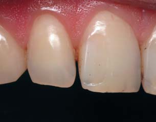
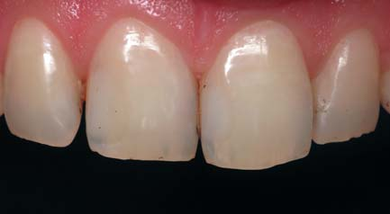
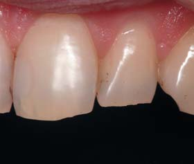
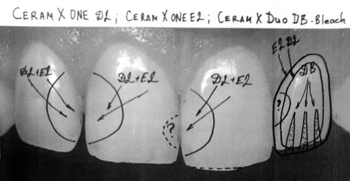
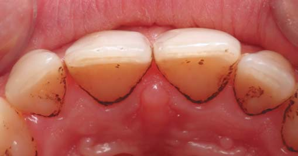
Чернетка з планом-схемою. Позначені поверхні, які потребують реставрації, і обрані відтінки матеріалу. Зуб 22 має більш піднебінне положення щодо всієї дуги верхньої щелепи.
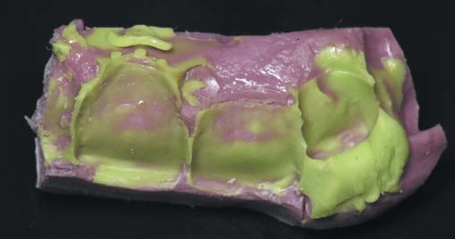
Візит другий: реставрація
Як планувалося раніше, з урахуванням схеми реставрації були задіяні різці 12, 11, 21, 22. Два схематичних питання вирішувалися так: мезіально-апроксимальний край зуба 11 був відпрепарований, і проведена реставрація мезіальної стінки у зв'язку з наявністю каріозного ураження; а другий, мезіально-апроксимальний край зуба 22 виявився інтактним з невеликою кількістю пігментованого нальоту. Відповідно обмежилися очищенням і протравлюванням. Єдине спірне питання після аналізу фотографій – надмірна кількість емалевого шару робила прозорим дистально-апроксимальну зону зуба 11, що підказувало фотографування. Тривалість візиту – 4 години.

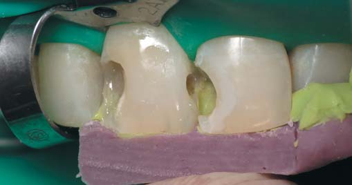
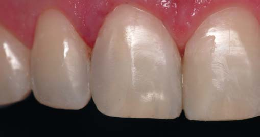
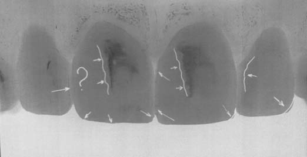
Підсумок цього візиту – чорно-білий аркуш А4 з фотографією виконаної роботи, де схематично позначено недоліки.
Візит третій. Завершальна частина
Під час цієї зустрічі пацієнт звернув увагу на легку невідповідність кольору реставрації на центральних різцях кольору своїх зубів у вигляді темнішого «провалу» в зоні реставрації (ми очікували цього ефекту на дистально-апроксимальному краї зуба 11 через переважання відтінку E2). Було ліквідовано невеликі похибки форми, проведено шліфування та полірування реставрацій з використанням полірувальних систем Dentsply Sirona, виконано фотореєстрацію реставрацій та усмішки пацієнта. Витрачений час – 1 година 15 хв.
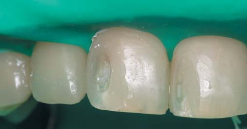
Результат
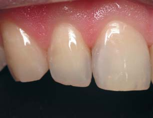
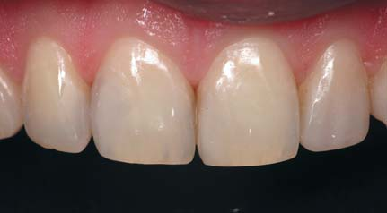
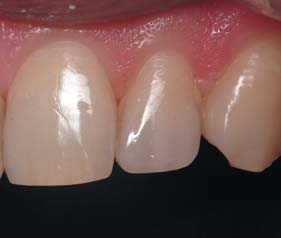
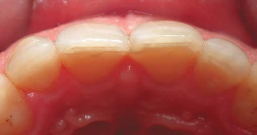
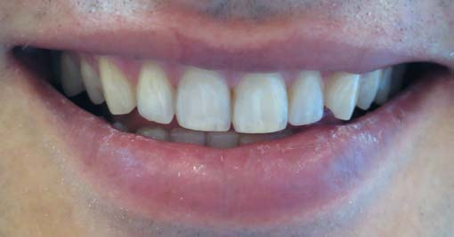
Особливості клінічного застосування реставраційних матеріалів Ceram X One, SDR на бічних зубах
Клінічний випадок 2
Пацієнт Олена, 30 років. Старі пломби в зубах 37, 36, 35. Зуби 37, 36 – вітальні, зуб 35 – девітальний. У зубі 35 близько 7 років тому провадилося лікування через ускладнений карієс, використано було матеріал, що розсмоктується, на основі ендометазону.
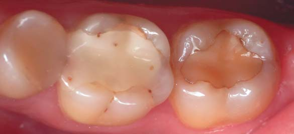
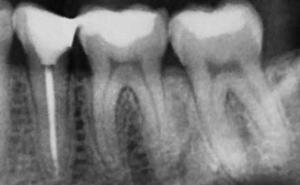
Перший візит. Початкова клінічна ситуація: зуби 37, 36, 35, етап консультації. Фрагмент ортопантомограми — доповнення до початкової клінічної ситуації.
Візит перший
Під час першої зустрічі на консультаційному прийомі в разі достатньої кількості часу в графіку або бажання пацієнта обов'язково полікувати зуби дуже часто можна виконати «пробну» реставрацію бокового зуба. Це дозволяє налагодити контакт з пацієнтом, підвищити рівень його довіри до процедури, визначитися з вибором анестезії, ступенем посидючості пацієнта в кріслі, а також допомагає відкоригувати обраний матеріал і підібрати потрібні відтінки (за необхідності фарби) для основного візиту.
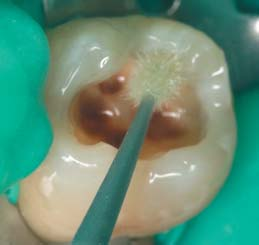
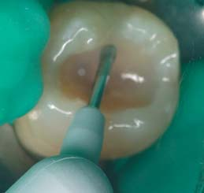
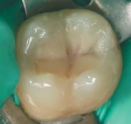
Візит другий
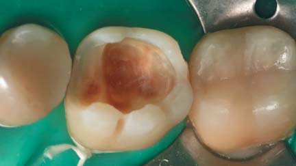
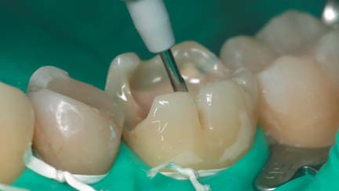
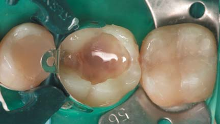
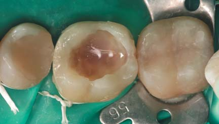
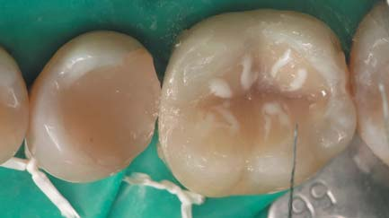
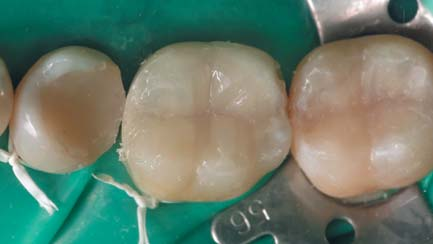
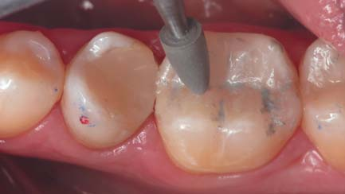
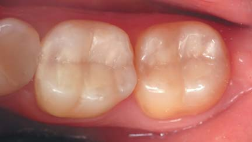
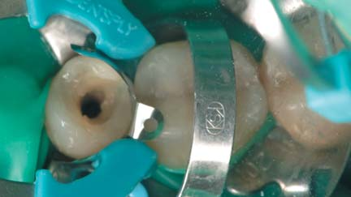
Візит третій
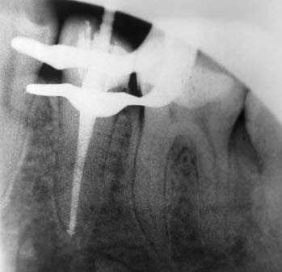
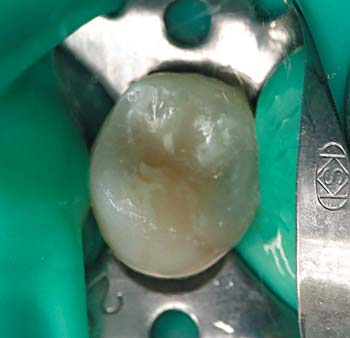
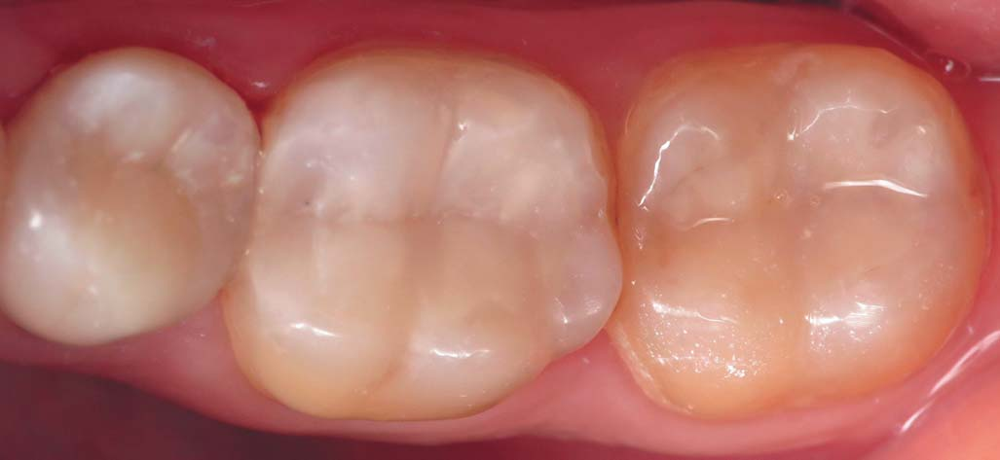
Висновки
На клінічному прийомі стоматолога дуже важливу роль відіграють ефективність застосовуваних технік та вміння лікаря раціоналізувати свій робочий і вільний час. Також часто цього вимагають пацієнти. У цій публікації ми промоніторили часові проміжки і порахували загальний робочий час. За ПРАВИЛОМ ТРЬОХ ВІЗИТІВ сумарний робочий час першого аналізованого клінічного випадку становив близько 6 годин 15 хв. Другий випадок потребував 6 годин. Під час реставрації бічних зубів питання естетики реставрації стоїть менш гостро, ніж при реставрації передніх зубів, погодьтеся, пацієнти рідко коли вимагають ідеально красиві бічні зуби.
Загалом принцип ПРАВИЛА ТРЬОХ ВІЗИТІВ, що стосується раціоналізації робочого часу, на мій погляд, забезпечується правильним плануванням реставрації, чітким алгоритмом, мануальними властивостями матеріалів Dentsply Sirona, а також безпосередньо залежить від досвіду лікаря та асистента. За наявного широкого вибору сучасних композитів для реставрації не останню роль грає їх вартість. Ceram X One має дуже прийнятне співвідношення ціна – якість у порівнянні з його аналогами, а також забезпечує чудові віддалені клінічні результати.
Література
- Радлинский С.В. Цифровая фотография и биомиметика // ДентАрт. – 2002. – №4. – С.30-40.
- Радлинский С.В. Реставрационные конструкции переднего и бокового зубов // ДентАрт. – 1996. – №4. – С.22-29.
- Радлинский С.В. Биомеханика зубов и реставраций // ДентАрт. – 2006. – №2. – С.42-48.
- Пономаренко О. ЭстетИкс ЭйчДи и ЦерамИкс Дуо – надежные компоненты для клинического успеха биомиметической реставрации // ДентАрт. – 2014. – №1. – С.45-55.
- Радлинский С.В. Реконструкция зубного ряда // ДентАрт. – 1997. – №3. – С.51-64.
- Кожемяк О. Натуральная эстетика ЦерамИкс — залог успеха реставрации // ДентАрт. – 2014. – №2. – С.45-50.
- Грютцнер А. Текучий композит ЭсДиАр — умный заменитель дентина // ДентАрт. – 2000. – №2. – С.41-49.
- Радлинский С.В. Реставрация контактных поверхностей в боковых зубах // ДентАрт. – 2011. – №1. – С.22-40.